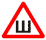
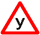

1. Механические транспортные средства (кроме мопедов) и прицепы должны быть зарегистрированы в ГИБДД МВД РФ или иных органах, определяемых Правительством РФ, в течение срока действия регистрационного знака «Транзит» или 10 суток после их приобретения или таможенного оформления. (абзац изменён в редакции Постановления Правительства РФ от 22.03.2014 N 221)
2. На механических транспортных средствах (кроме мопедов, трамваев и троллейбусов) и прицепах должны быть установлены на предусмотренных для этого местах регистрационные знаки соответствующего образца. (в ред. Постановлений Правительства РФ от 24.01.2001 № 67, от 07.05.2003 № 265, от 19.04.2008 № 287, от 28.03.2012 № 254, от 22.03.2014 № 221, от 06.10.2022 № 1769)
На трамваях и троллейбусах наносятся регистрационные номера, присваиваемые соответствующими ведомствами.
3. Техническое состояние и оборудование участвующих в дорожном движении транспортных средств в части, относящейся к безопасности дорожного движения и охране окружающей среды, должно отвечать требованиям соответствующих технических регламентов, стандартов, правил и руководств по их технической эксплуатации. (в ред. Постановления Правительства РФ от 06.10.2022 № 1769)
4. Грузовой автомобиль с бортовой платформой, используемый для перевозки людей, должен быть оборудован сиденьями, закрепленными на высоте 0,3 — 0,5 м от пола и не менее 0,3 м от верхнего края борта.
Сиденья, расположенные вдоль заднего или бокового борта, должны иметь прочные спинки.
4.1. В автобусах, используемых для перевозки пассажиров в междугородном сообщении, места для сидения должны быть оборудованы ремнями безопасности.
5. Механическое транспортное средство, используемое для обучения вождению, должно быть оборудовано дополнительными педалями привода сцепления (кроме транспортных средств с автоматической трансмиссией) и тормоза, зеркалом заднего вида для обучающего и опознавательным знаком «Учебное транспортное средство» в соответствии с пунктом 8 настоящих Основных положений.
5(1). Транспортное средство, используемое в качестве легкового такси, должно быть оборудовано таксометром, иметь на кузове (боковых поверхностях кузова) цветографическую схему, представляющую собой композицию из квадратов контрастного цвета, расположенных в шахматном порядке, и на крыше — опознавательный фонарь оранжевого цвета.
6. Велосипед должен иметь исправные тормоз, руль и звуковой сигнал, быть оборудован спереди световозвращателем и фонарем или фарой (для движения в темное время суток и в условиях недостаточной видимости) белого цвета, сзади — световозвращателем или фонарем красного цвета, а с каждой боковой стороны — световозвращателем оранжевого или красного цвета.
7. Гужевая повозка должна иметь предусмотренные конструкцией исправное стояночное тормозное устройство и противооткатные упоры, быть оборудована спереди двумя световозвращателями и фонарем белого цвета (для движения в темное время суток и в условиях недостаточной видимости), сзади — двумя световозвращателями и фонарем красного цвета.
8. На транспортных средствах должны быть установлены опознавательные знаки:
Aбзац о знаке Автопоезд признан утратившим силу с 1 марта 2023 года. - Постановление Правительства РФ от 06.10.2022 № 1769;
Aбзац о знаке Шипы признан утратившим силу в редакции Постановления Правительства РФ от 24.11.2018 № 1414 (Постановление вступает в действие с 08.12.2018);

Перевозка детей — в виде квадрата желтого цвета с каймой красного цвета (ширина каймы — 1/10 стороны), с черным изображением символа дорожного знака 1.23 (сторона квадрата опознавательного знака, расположенного спереди транспортного средства, должна быть не менее 250 мм, сзади — 400 мм);
Глухой водитель — в виде желтого круга диаметром 160 мм с нанесенными внутри тремя черными кружками диаметром 40 мм, расположенными по углам воображаемого равностороннего треугольника, вершина которого обращена вниз, — спереди и сзади механических транспортных средств, управляемых глухонемыми или глухими водителями;
Учебное транспортное средство — в виде равностороннего треугольника белого цвета вершиной вверх с каймой красного цвета, в который вписана буква «У» черного цвета (сторона не менее 200 мм, ширина каймы — 1/10 стороны), — спереди и сзади механических транспортных средств, используемых для обучения вождению (допускается установка двустороннего знака на крыше легкового автомобиля);

Ограничение скорости — в виде уменьшенного цветного изображения дорожного знака 3.24 с указанием разрешенной скорости (диаметр знака — не менее 160 мм, ширина каймы — 1/10 диаметра) — на задней стороне кузова слева у механических транспортных средств, осуществляющих организованные перевозки групп детей, у тяжеловесных и (или) крупногабаритных транспортных средств, транспортных средств, осуществляющих перевозки опасных грузов, а также в случаях, когда максимальная скорость транспортного средства по технической характеристике ниже определенной пунктами 10.3 и 10.4 ПДД РФ; (абзац в ред. Постановлений Правительства РФ от 24.01.2001 № 67, от 26.03.2020 № 341)
Опасный груз — в виде больших знаков опасности, табличек оранжевого цвета, маркировочных знаков в случае, когда это требование установлено приложением А к Соглашению о международной дорожной перевозке опасных грузов от 30 сентября 1957 г. (ДОПОГ), размещенных в соответствии с положениями главы 5.3 указанного приложения. (в ред. Постановления Правительства РФ от 06.10.2022 № 1769)
На опознавательный знак наносятся обозначения, характеризующие опасные свойства перевозимого груза:
Крупногабаритное транспортное средство — в виде щитка размером 400×400 мм с нанесенными по диагонали красными и белыми чередующимися полосами шириной 50 мм со световозвращающей поверхностью; (в ред. Постановления Правительства РФ от 06.10.2022 № 1769)
Тихоходное транспортное средство — в виде равностороннего треугольника с флюоресцирующим покрытием красного цвета и со световозвращающей каймой желтого или красного цвета (длина стороны треугольника от 350 до 365 мм, ширина каймы от 45 до 48 мм) — сзади механических транспортных средств, для которых предприятием-изготовителем установлена максимальная скорость не более 30 км/ч;
Длинномерное транспортное средство — в виде прямоугольника размером не менее 1200×200 мм желтого цвета с каймой красного цвета (ширина 40 мм), имеющего световозвращающую поверхность, — сзади транспортных средств, длина которых с грузом или без груза более 20 м, и автопоездов с двумя и более прицепами. При невозможности размещения знака указанного размера допускается установка двух одинаковых знаков размером не менее 600×200 мм симметрично оси транспортного средства.
Начинающий водитель
— в виде квадрата желтого цвета (сторона 150 мм) с изображением восклицательного знака черного цвета высотой 110 мм — сзади механических транспортных средств (за исключением тракторов, самоходных машин, мотоциклов и мопедов), управляемых водителями, имеющими право на управление указанными транспортными средствами менее 2 лет.
(абзац введен Постановлением Правительства РФ от 27.01.2009 № 28; в ред. Постановления Правительства РФ от 24.03.2017 № 333)
По желанию водителя могут быть установлены опознавательные знаки:
Врач — в виде квадрата синего цвета (сторона 140 мм) с вписанным белым кругом (диаметр 125 мм), на который нанесен красный крест (высота 90 мм, ширина штриха 25 мм), — спереди и сзади автомобилей, управляемых водителями-врачами;
Инвалид — в виде квадрата желтого цвета со стороной 150 мм и изображением символа дорожного знака 8.17 черного цвета — спереди или сзади механических транспортных средств, управляемых инвалидами, которым в соответствии с Федеральным законом "О социальной защите инвалидов в Российской Федерации" предоставлено право на бесплатное использование мест для парковки транспортных средств, перевозящих таких инвалидов и (или) детей-инвалидов. (в ред. Постановления Правительства РФ от 06.10.2022 № 1769)
На транспортных средствах может быть установлен опознавательный знак «Федеральная служба охраны Российской Федерации», являющийся условным опознавательным знаком, в виде двух фонарей с огнями синего цвета, работающих в мигающем режиме, расположенных не выше фар ближнего света в передней части транспортного средства, используемого для обеспечения безопасности объектов государственной охраны.
9. Предупредительные устройства для обозначения гибких связующих звеньев при буксировке механических транспортных средств должны выполняться в виде флажков или щитков размером 200×200 мм с нанесенными по диагонали красными и белыми чередующимися полосами шириной 50 мм со световозвращающей поверхностью.
На гибкое связующее звено должно устанавливаться не менее двух предупредительных устройств.
10. Конструкция жесткого буксирующего устройства должна соответствовать требованиям ГОСТа 25907-89.
11. Запрещается эксплуатация:
- автомобилей, автобусов, автопоездов, прицепов, мотоциклов, мопедов, троллейбусов, тракторов и других самоходных машин при наличии неисправностей и условий, предусмотренных перечнем неисправностей и условий, при которых запрещается эксплуатация транспортных средств (согласно приложению); (в ред. Постановления Правительства РФ от 06.10.2022 № 1769)
- трамваев при наличии хотя бы одной неисправности по соответствующим Правилам технической эксплуатации; (в ред. Постановления Правительства РФ от 06.10.2022 № 1769)
- транспортных средств, не прошедших в установленном порядке государственный технический осмотр или технический осмотр;
- транспортных средств, оборудованных без соответствующего разрешения опознавательным знаком «Федеральная служба охраны Российской Федерации», проблесковыми маячками и (или) специальными звуковыми сигналами, с нанесенными на наружные поверхности специальными цветографическими схемами, надписями и обозначениями, не соответствующими государственным стандартам РФ, без укрепленных на установленных местах регистрационных знаков, имеющих скрытые, поддельные, измененные номера узлов и агрегатов или регистрационные знаки;
- транспортных средств, владельцы которых не застраховали свою гражданскую ответственность в соответствии с законодательством РФ;
- транспортных средств, имеющих на кузове (боковых поверхностях кузова) цветографическую схему легкового такси и (или) на крыше — опознавательный фонарь легкового такси, в случае отсутствия у водителя такого транспортного средства выданного в установленном порядке разрешения на осуществление деятельности по перевозке пассажиров и багажа легковым такси.
- транспортных средств, оборудованных проблесковыми маячками желтого или оранжевого цвета, не зарегистрированных в Государственной инспекции безопасности дорожного движения Министерства внутренних дел Российской Федерации или иных органах, определяемых Правительством Российской Федерации (за исключением крупногабаритных транспортных средств и транспортных средств, перевозящих взрывчатые, легковоспламеняющиеся, радиоактивные вещества и ядовитые вещества высокой степени опасности). (абзац изменен Постановлением Правительства РФ от 26.03.2020 № 341)
12. Должностным и иным лицам, ответственным за техническое состояние и эксплуатацию транспортных средств, запрещается:
- выпускать на линию транспортные средства при наличии неисправностей и условий, с которыми запрещается их эксплуатация, или переоборудованные без соответствующего разрешения, или не зарегистрированные в установленном порядке, или не прошедшие государственный технический осмотр или технический осмотр; (в ред. Постановлений Правительства РФ от 28.03.2012 № 254, от 06.10.2022 № 1769)
- допускать к управлению транспортными средствами водителей, находящихся в состоянии опьянения (алкогольного, наркотического или иного), под воздействием лекарственных препаратов, ухудшающих реакцию и внимание, в болезненном или утомленном состоянии, а также водителей с нарушением режима труда и отдыха, ставящем под угрозу безопасность движения, не имеющих страхового полиса обязательного страхования гражданской ответственности владельца транспортного средства в случаях, когда обязанность по страхованию своей гражданской ответственности установлена федеральным законом, или лиц, не имеющих права управления транспортным средством данной категории или подкатегории; (в ред. Постановлений Правительства РФ от 07.05.2003 № 265, от 24.10.2014 № 1097, от 06.10.2022 № 1769)
- направлять для движения по дорогам с асфальто- и цементно-бетонным покрытием тракторы и другие самоходные машины на гусеничном ходу.
13. Должностные и иные лица, ответственные за состояние дорог, железнодорожных переездов и других дорожных сооружений, обязаны:
- содержать дороги, железнодорожные переезды и другие дорожные сооружения в безопасном для движения состоянии в соответствии с требованиями стандартов, норм и правил;
- информировать участников дорожного движения о вводимых ограничениях и об изменениях в организации дорожного движения с помощью соответствующих технических средств, информационных щитов и средств массовой информации;
- принимать меры к своевременному устранению помех для движения, запрещению или ограничению движения на отдельных участках дорог, когда пользование ими угрожает безопасности движения.
14. Должностные и иные лица, ответственные за производство работ на дорогах либо производящие работы с использованием транспортных средств на проезжей части дороги, обязаны обеспечивать безопасность движения в местах проведения работ. Эти места, а также неработающие дорожные машины, транспортные средства, строительные материалы, конструкции и тому подобное, которые не могут быть убраны за пределы дороги, должны быть обозначены соответствующими дорожными знаками, направляющими и ограждающими устройствами, а в темное время суток и в условиях недостаточной видимости - дополнительно красными или желтыми сигнальными огнями.
По окончании работ на дороге должно быть обеспечено безопасное передвижение транспортных средств и пешеходов, а временные технические средства организации дорожного движения, установленные в местах проведения дорожных работ, должны быть убраны, демонтированы или демаркированы.
(п. 14 в ред. Постановления Правительства РФ от 06.10.2022 № 1769)
15. Соответствующие должностные и иные лица в случаях, предусмотренных действующим законодательством, в установленном порядке согласовывают:
- документацию по организации дорожного движения (комплексные схемы организации дорожного движения и (или) проекты организации дорожного движения); (в ред. Постановления Правительства РФ от 06.10.2022 № 1769)
- проекты строительства, реконструкции и ремонта дорог, дорожных сооружений;
- установку в непосредственной близости от дороги киосков, транспарантов, плакатов, рекламных щитов и тому подобного, ухудшающих видимость или затрудняющих движение пешеходов;
- маршруты движения и расположение мест остановки маршрутных транспортных средств;
- проведение на дорогах массовых, спортивных и иных мероприятий;
- внесение изменений в конструкцию зарегистрированных транспортных средств, влияющих на обеспечение безопасности дорожного движения;
- движение тяжеловесных транспортных средств, масса которых с грузом или без груза и (или) нагрузка на ось которых более чем на 2 процента превышают допустимую массу транспортного средства и (или) допустимую нагрузку на ось, а также крупногабаритных транспортных средств и транспортных средств, осуществляющих перевозки опасных грузов; (абзац изменен Постановлением Правительства РФ от 26.03.2020 № 341)
- движение автопоездов общей длиной более 20 м или автопоездов с двумя и более прицепами;
- программы подготовки специалистов по безопасности дорожного движения, инструкторов по вождению и водителей;
- перечень дорог, на которых запрещается учебная езда;
- производство любых работ на дороге, создающих помехи движению транспортных средств или пешеходов.
Примечание. В тексте настоящего документа использована специальная терминология, установленная Правилами дорожного движения РФ.
16. Проблесковые маячки желтого или оранжевого цвета устанавливаются:
- на транспортных средствах, выполняющих работы по строительству, ремонту или содержанию дорог, погрузке поврежденных, неисправных и перемещаемых транспортных средств;
- на крупногабаритных транспортных средствах и транспортных средствах, осуществляющих перевозки грузов повышенной опасности; (в ред. Постановления Правительства РФ от 06.10.2022 № 1769)
- на транспортных средствах, осуществляющих сопровождение тяжеловесных и (или) крупногабаритных транспортных средств, а также транспортных средств, осуществляющих перевозки опасных грузов; (в ред. Постановления Правительства РФ от 06.10.2022 № 1769)
- на транспортных средствах, осуществляющих сопровождение организованных групп велосипедистов при проведении тренировочных мероприятий на автомобильных дорогах общего пользования.
- на автобусах, используемых для организованной перевозки группы детей. (абзац введен Постановлением Правительства РФ от 06.10.2022 № 1769)
(п. 16 в ред. Постановления Правительства РФ от 26.03.2020 № 341)
17. Проблесковые маячки бело-лунного цвета и специальные звуковые сигналы могут устанавливаться на транспортных средствах организаций федеральной почтовой связи, имеющих на боковой поверхности белую диагональную полосу на синем фоне, эмблему организаций федеральной почтовой связи, надпись "Почта России", и на транспортных средствах, перевозящих денежную выручку и (или) ценные грузы и имеющих специальные цветографические схемы, нанесенные на наружные поверхности в соответствии с государственным стандартом Российской Федерации, за исключением транспортных средств оперативных служб. (п. 17 введен Постановлением Правительства РФ от 21.04.2000 № 370; в ред. Постановления Правительства РФ от 06.10.2022 № 1769)
18. Выдача разрешений на оборудование соответствующих транспортных средств опознавательными знаками «Федеральная служба охраны Российской Федерации», проблесковыми маячками и (или) специальными звуковыми сигналами производится в порядке, установленном Министерством внутренних дел РФ.
19. Транспортные средства, не имеющие специальных цветографических схем, нанесенных на наружные поверхности в соответствии с государственными стандартами РФ, могут быть в установленных случаях оборудованы специальным звуковым сигналом и одним проблесковым маячком синего цвета высотой не более 230 мм и с диаметром основания корпуса не более 200 мм.
20. Проблесковые маячки всех цветов устанавливаются на крышу транспортного средства или над ней. Способы крепления должны обеспечивать надежность установки на всех режимах движения транспортного средства. При этом должна быть обеспечена видимость светового сигнала на угол 360 градусов в горизонтальной плоскости.
Для транспортных средств ГИБДД МВД РФ и Военной автомобильной инспекции, сопровождающих колонны транспортных средств, и грузовых автомобилей допускается уменьшение угла видимости проблескового маячка до 180 градусов при условии видимости его со стороны передней части транспортного средства.
21. Сведения об оборудовании транспортных средств опознавательным знаком «Федеральная служба охраны Российской Федерации», проблесковыми маячками красного и (или) синего цветов и специальными звуковыми сигналами должны быть занесены в регистрационные документы на транспортные средства.